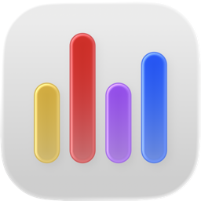

-
Hardware
CPU, GPU, RAM and SSD usage.
-
Network
Live upload and download rates.
-
Customizable
Show, hide and reorder any metric.
-
Lightweight
Barely noticeable resource usage.

System stats, at a glance.
Monitor system stats with minimal overhead, directly from the menu bar.
- Install size
- 5.4 MB
- CPU usage
- 0.1%
- Memory
- 52 MB
Requires macOS 14+